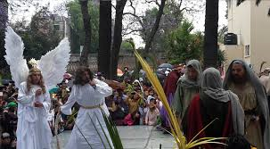
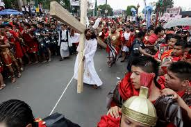
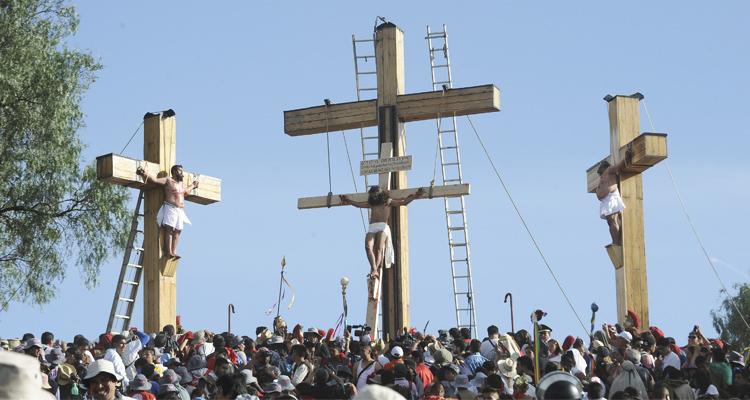
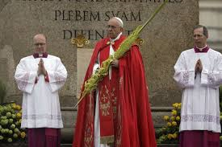
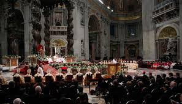
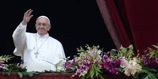
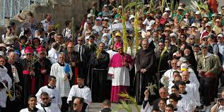
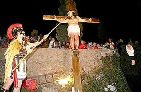
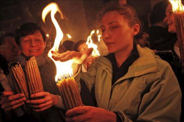

IZTAPALAPA
En Iztapalapa tiene lugar una ceremonia, fiesta y representación de la Pasión, que no responde ni a una narración sacra, ni a un teatro tradicional: es una expresión de múltiples aportaciones que se funde en una particular sincretización.

Se lleva acabo el recorrido del cuerpo de Cristo hacia la Macroplaza donde será su Santo Sepulcro

Muere Cristo en la cruz. Clavan una lanza en su costado de donde brota sangre

SILVAAXILOTE MILTON
Celebracion en el vatacano
En el Vaticano El papa argentino presidirá el domingo la tradicional celebración del domingo de ramos, con la que se inicia la Semana Santa, el tiempo litúrgico más importante para los católicos

CIUDAD DEL VATICANO El tradicional Vía Crucis en el Coliseo romano del Viernes Santo y la bendición

El ciclo concluirá el domingo, fiesta de Pascua con la misa del día presidida por el Papa a las 10 locales en plaza san Pedro Luego desde la logia central de la basílica pronunciará el mensaje pascual e imparte la bendición a la ciudad y al mundo

Muere Cristo en la cruz. Clavan una lanza en su costado de donde brota sangre
SILVA AXILOTE MILTON
JERUSALEN
Los dias mas significativos son Jueves y Viernes Santos
Los momentos más emotivos y llamativos se dan el Jueves Santo día en que los cristianos recuerdan la Última Cena de Cristo en la que instauró el sacramento de la Eucaristía y tras la cual fue traicionado por Judas

• El Viernes Santo el día en que Jesús fue crucificado y enterrado se lleva a cabo una procesión de miles de cruces, la cual es encabezada por el Patriarca la Custodia de los Lugares Santos y otros grupos independientes deteniéndose en cada estación a lo largo de la Vía Dolorosa en la Ciudad Vieja de Jerusalem y dirigiéndose al Calvario en la Iglesia del Santo Sepulcro

El Sábado de Gloria los cristianos ortodoxos celebran la Ceremonia del Fuego Santo la cual reúne a miles de feligreses dentro y fuera de la Iglesia del Santo Sepulcro para esperar el milagroso encendido de la vela del Patriarca desde dentro de la tumba Esta ceremonia espectacular es única y muy particular en Jerusalem y es transmitida en todo el mundo Además la luz es traída desde países ortodoxos en un vuelo especial

SILVA AXILOTE MILTON